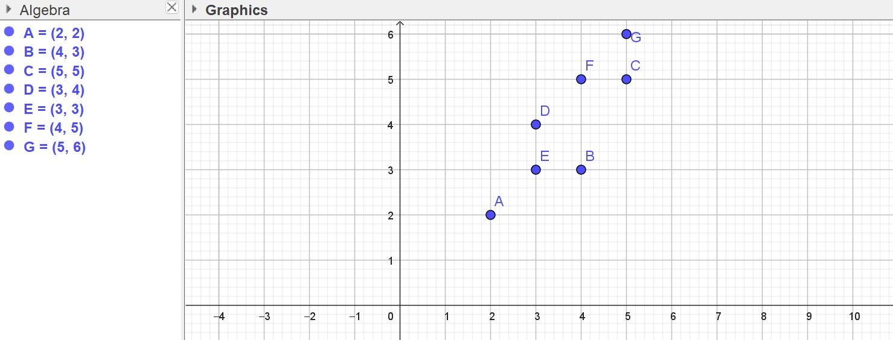
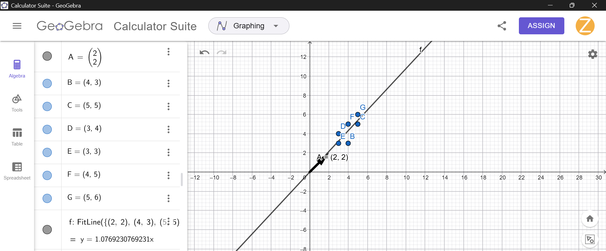

Tugas Pertemuan 13: Analisa Data Menggunakan Regresi Linier#
Perkenalkan saya Zakaria Mujur Prasetyo dengan NIM 240411100144. Pada kesempatan kali ini, saya akan berbagi pengalaman saya dalam menyelesaikan tugas mata kuliah Penambangan Data untuk Pertemuan 13 yang membahas tentang Regresi Linier. Referensi utama untuk materi ini saya ambil dari website materi bapak dosen.
Awalnya, bapak dosen memberikan sebuah tugas berupa sekumpulan titik data yang harus dicari garis regresinya. Selain itu, di gambar soal juga terdapat instruksi tambahan untuk mengerjakan tugas ini menggunakan dua metode (secara pemrograman dan analitik). Soal lengkap dan titik-titik data tersebut dapat dilihat pada gambar di bawah ini:

Dari soal tersebut, saya memodelkan titik-titik koordinatnya menjadi sebuah dataset sederhana sebagai berikut:
A(2, 2)
B(4, 3)
C(5, 5)
D(3, 4)
E(3, 3)
F(4, 5)
G(5, 6)
Tugas saya di sini ada dua, yaitu:
Menghitung koefisien regresi menggunakan library
scikit-learnpada Python.Menghitung koefisien regresi secara analitik menggunakan rumus matriks.
Mari kita bahas satu per satu!
1. Menghitung Koefisien Regresi dengan Scikit-Learn#
Untuk cara pertama ini, saya memanfaatkan library sklearn yang sangat populer di Python, khususnya LinearRegression. Langkah pertama yang saya lakukan adalah mengimpor library tersebut dan menyiapkan datanya ke dalam bentuk array numpy.
Berikut adalah kode program yang saya buat:
import numpy as np
from sklearn.linear_model import LinearRegression
# Menyiapkan data titik X dan Y
# X adalah array 2D karena sklearn mengharapkan format matriks untuk fitur
X = np.array([2, 4, 5, 3, 3, 4, 5]).reshape(-1, 1)
y = np.array([2, 3, 5, 4, 3, 5, 6])
# Membuat model regresi linier dan melakukan fitting data
model = LinearRegression()
model.fit(X, y)
# Menampilkan hasil koefisien dan intercept
print(f"Nilai Intercept (a) : {model.intercept_:.4f}")
print(f"Nilai Koefisien (b) : {model.coef_[0]:.4f}")
Ketika saya menjalankan kode tersebut, hasil output di terminal adalah:
Nilai Intercept (a) : 0.0000
Nilai Koefisien (b) : 1.0769
Hal ini berarti persamaan garis regresinya adalah y = 1.0769x + 0.
2. Menghitung Secara Analitik (Rumus Matriks)#
Selain menggunakan library instan, saya juga penasaran untuk menghitungnya secara manual (analitik) menggunakan rumus regresi linier berbasis matriks. Rumus yang saya gunakan adalah sebagai berikut:

Rumus tersebut adalah \(\hat{\beta} = (X^T X)^{-1} X^T Y\), di mana matriks \(X\) harus ditambahkan kolom konstanta (berisi angka 1) untuk menghitung intercept.
Saya pun menuliskan implementasinya di Python dengan memanfaatkan operasi matriks dari numpy:
import numpy as np
# Menyiapkan data X dan y
X = np.array([2, 4, 5, 3, 3, 4, 5])
y = np.array([2, 3, 5, 4, 3, 5, 6])
# Menambahkan kolom angka 1 pada matriks X untuk menghitung intercept (X_b)
X_b = np.c_[np.ones((len(X), 1)), X]
# Menggunakan rumus analitik: Beta = (X^T * X)^-1 * X^T * y
# np.linalg.inv() digunakan untuk mencari invers matriks
# .dot() digunakan untuk perkalian matriks
beta_hat = np.linalg.inv(X_b.T.dot(X_b)).dot(X_b.T).dot(y)
print(f"Nilai Intercept (a) analitik : {beta_hat[0]:.4f}")
print(f"Nilai Koefisien (b) analitik : {beta_hat[1]:.4f}")
Sama halnya dengan program sebelumnya, hasil output ketika dijalankan ternyata persis sama dengan hasil dari scikit-learn:
Nilai Intercept (a) analitik : 0.0000
Nilai Koefisien (b) analitik : 1.0769
3. Pembuktian dengan GeoGebra#
Untuk memastikan bahwa hasil yang saya dapatkan benar, saya mencoba memplot titik-titik data tersebut ke dalam aplikasi GeoGebra. Di GeoGebra, saya menggunakan fungsi FitLine untuk secara otomatis mencari garis regresi linear terbaik yang mewakili kumpulan titik (A sampai G) tersebut.
Berikut adalah hasil implementasi saya di GeoGebra:

Berdasarkan hasil pemrosesan GeoGebra, persamaan garis yang terbentuk adalah y = 1.0769230769231x.
Karena nilai intercept-nya bernilai 0, maka hanya ditampilkan koefisien regresi x. Hal ini membuktikan bahwa perhitungan yang saya lakukan menggunakan program Python, baik itu melalui library scikit-learn maupun perhitungan matriks secara analitik, sudah sangat akurat dan sejalan dengan hasil simulasi geometris di GeoGebra.
Itulah perjalanan saya dalam memecahkan tugas analisis data menggunakan regresi linier kali ini. Dengan bereksperimen langsung menggunakan berbagai cara, saya jadi lebih memahami bagaimana konsep dasar regresi linier bekerja di balik layar kode. Semoga penjelasan saya ini bisa bermanfaat dan mudah dipahami ya!